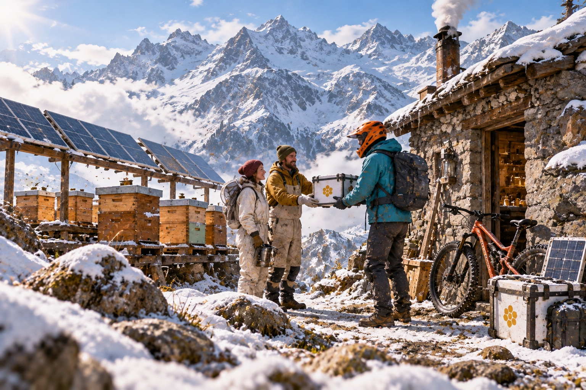
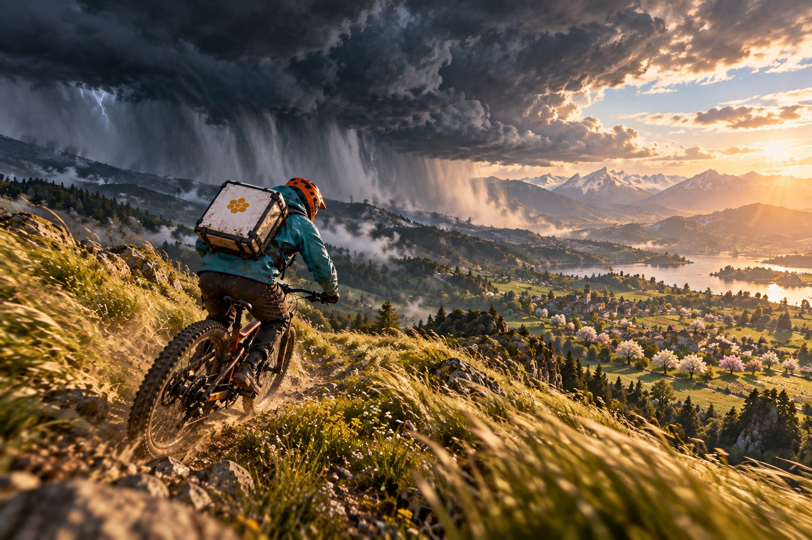
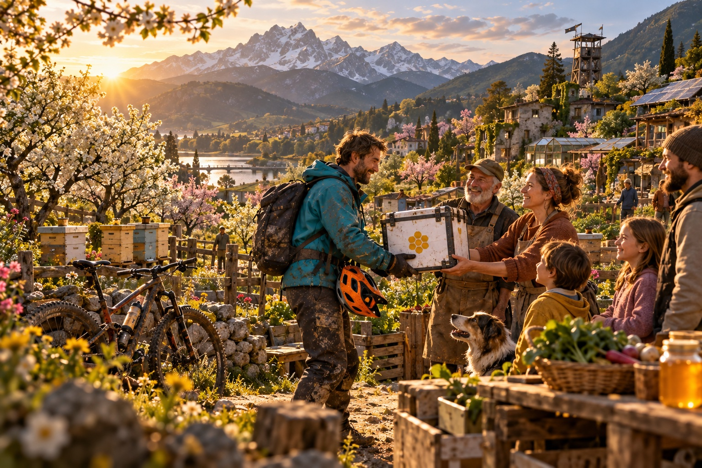

Domácí úkol č. 1, zadání Survival Game Design pro začátečníky, SKVT Petr Kratochvíl, říjen 2026
Ilustrace v této příloze vygenerovala AI (ChatGPT). Přidal jsem je, protože dobře ukazují záměr: tón světa, biomy a to, jak má náklad a péče o něj ve hře působit. Výtvarný styl a detaily ale nejsou závazné, hra si ponechá stylizovaný vzhled Descenders.
Cesta zpět Nejcitlivější náklad veze kurýr tudy, kudy se jede nejrychleji a nejčastěji padá. Pád nestojí život jezdce, ale vitalitu roje.

Zvrat ve včelí stanici Panely za roj. Tady se kurýr dozví, jak křehký náklad poveze, a přibude ukazatel vitality roje.Canyon v noci Ve dne je kaňon pro roj nebezpečná výheň, v noci chladno, ale tma. Světlo zabere místo ve výbavě. V dálce svítí čerpací stanice, safe zóna.

Bouřková fronta Předpověď v safe zóně ji ohlásí předem. Hráč se rozhodne, jestli jí ujede, nebo ji přečká v chatě a ztratí čas.

Včasný příjezd Roj dorazil, dokud sady kvetou. Kvetoucí sady jsou nejbarevnější místo hry a odměna za celou cestu.